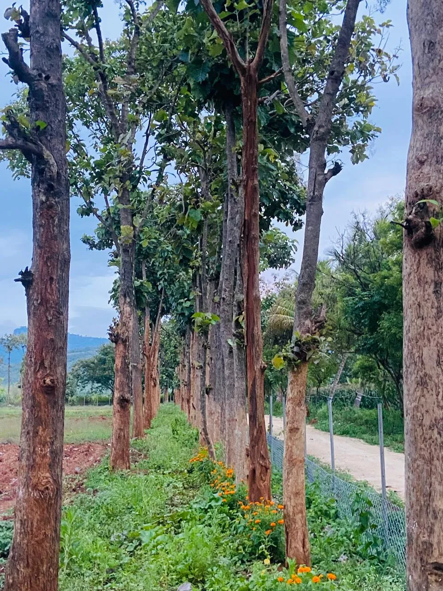
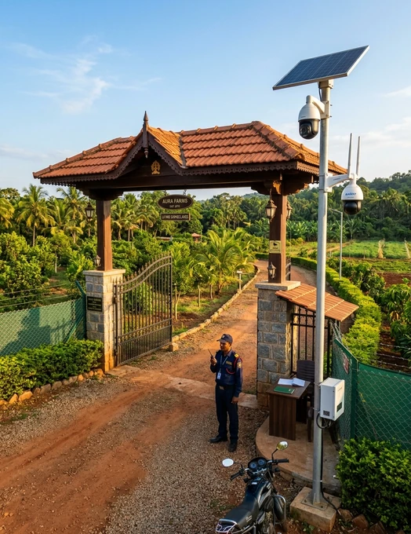
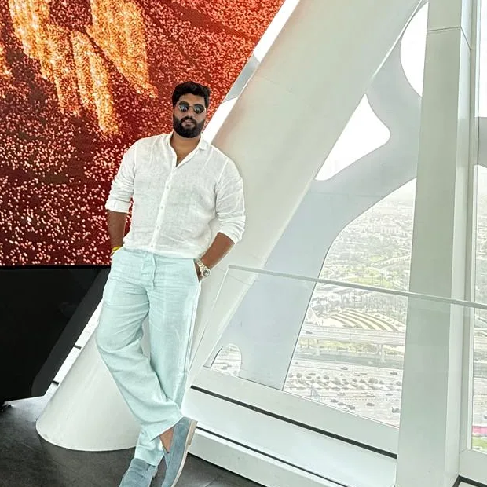

Mission
To enable families to engage in meaningful, sustainable farmland ownership through fully managed farms, ensuring long-term stewardship and generational value.
Managed farmland / Yelandur, Karnataka
Established 2017 / Yelandur
Krushi Bhoomi Farms is a fully managed farmland company nestled in the red soil of Yelandur, Karnataka — Phase 1 across 22 acres dedicated to sandalwood, seasonal fruits, commercial flowers, and integrated farming projects aligned with market demand.

Farming with a longer view
To enable families to engage in meaningful, sustainable farmland ownership through fully managed farms, ensuring long-term stewardship and generational value.
To connect people with farming through responsible business models, prioritising customer trust, land stewardship and transparent practices while driving ecological vitality and community growth.
Three core pillars

We employ ethical business practices and maintain the highest standards of quality and transparency.

The well-being of our farm owners, the land and our local communities stays at the centre of every decision.

We are dedicated to environmental conservation and soil preservation alongside sustainable agricultural practices.
2017 — 2026
Land acquisition begins in Yelandur, Karnataka, laying the foundation for Krushi Bhoomi Farms.
First plantation trials begin, testing sandalwood alongside native fruit-bearing trees.
Fencing, drip irrigation and access roads are developed across the land.
Operations expand with a growing focus on sustainable, integrated cultivation.
The groundwork is laid for a fully managed farmland ownership model.
Farm operations mature, setting the stage for the Krushi Bhoomi Farms brand.
The brand and website take shape around sandalwood and mixed-fruit farm plots.
The first plot booking is confirmed and farm operations take root on the ground.
The model is refined to 6,500 sq. ft. plots with 40–50 trees, cattle and sheep.
The Krushi Bhoomi story reaches a new generation of farmland owners.
Dear patrons and nature enthusiasts
Our journey began with a deep-rooted passion for agriculture and a vision to redefine farmland ownership. Krushi Bhoomi Farms emerged as a harmonious blend of nature’s abundance and responsible land management.
We believe in more than cultivating crops; we believe in nurturing dreams. Our purpose is to help families connect with the earth, build lasting value and embrace the serenity of farm living.
With a dedicated team and sustainable practices, we manage every farm with care — supporting healthy plantations and a lasting relationship with the land.
Warm regards,
Founders, Krushi Bhoomi Farms
Founder

Founder
Visits now open
Visit the 22-acre Phase 1 farm in Yeragamballi Village, Yelandur Taluk and meet the team behind it.
See the land. Verify the details. Then decide.